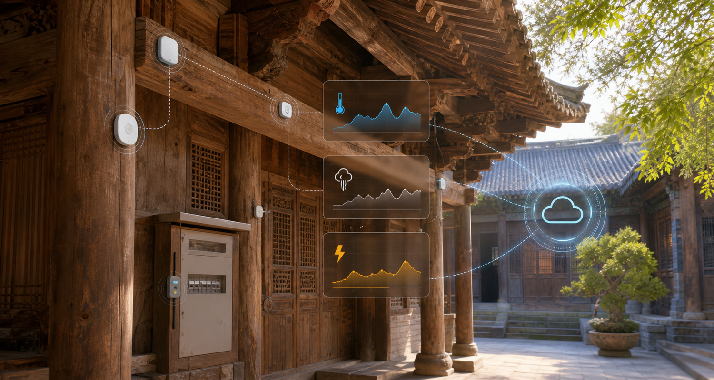

环境监测节点
SHT31 温湿度、烟雾/可燃气体、火焰探测，适合梁柱、库房、游客区。

实时监测
Hardware Layer
先从配电箱与老旧线路监测节点做 MVP，再扩展到梁柱、库房和香火区。
SHT31 温湿度、烟雾/可燃气体、火焰探测，适合梁柱、库房、游客区。
DS18B20 线缆温度、SCT-013 电流互感器、漏电流检测，适合配电箱和线路端子。
ESP32/STM32 采集、阈值判断、断网缓存、低功耗采样，异常时提高采样频率。
Wi-Fi 用于实验原型，LoRa/NB-IoT 用于真实古建筑场景，减少布线破坏。
Cloud Platform
单点阈值、温升速率、组合异常、电气负载趋势共同参与评分，避免单传感器误报。
设备按 JSON 上报 deviceId、location、temperature、humidity、cableTemp、current、leakage、smoke。
在线率、电量、信号强度、固件版本、安装点位和巡检记录统一管理。
App Layer
App 负责把平台判断结果变成现场动作：接收推送、确认位置、拍照处理、复查关闭、自动生成月度隐患报告。
Patent Focus
卡扣、绑带、磁吸和可拆探头结构，适配梁柱、配电箱、木构件，不破坏古建筑表面。
线缆温升、负载波动、漏电流、烟雾与环境干燥度联合判断，形成分级预警。
正常状态低频采样，疑似异常提高采样频率，断网缓存并恢复补传。